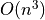
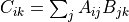

TensorFlow 性能優化¶
本節主要介紹 TensorFlow 模型開發和訓練中的一些原則和經驗，使得讀者能夠編寫出更加高效的 TensorFlow 程序。
關於計算性能的若干重要事實¶
在算法課程中，我們往往使用時間複雜度（大O符號）作爲衡量算法性能的重要指標。這種表示方法對於算法理論性能分析非常有效，但也可能給我們帶來一種誤解，即常數項的時間複雜度變化對實際的數值計算效率影響不大。事實上，在實際的數值計算中，有以下關於計算性能的重要事實。儘管它們帶來的都是常數級的時間複雜度變化，但對計算性能的影響卻相當顯著。
不同的程序設計語言由於設計機制和理念，以及編譯器/解釋器的實現方式不同，在數值計算的效率上有着巨大的區別。例如，Python 語言爲了增強語言的動態性，而犧牲了大量計算效率。而C/C++語言雖然複雜，但具有出色的計算效率。簡而言之，對程序員友好的語言往往對計算機不友好，反之亦然。不同程序設計語言帶來的性能差距可達
 數量級以上。TensorFlow 等各種數值計算庫的底層就是使用 C++ 開發的；
數量級以上。TensorFlow 等各種數值計算庫的底層就是使用 C++ 開發的；對於矩陣運算，由於有內置的並行加速和硬件優化過程，數值計算庫的內置方法（底層調用BLAS）往往要遠快於直接使用 For 循環，大規模矩陣運算的性能差距可達
數量級以上；對於矩陣/張量運算，GPU 的並行架構（大量小的計算單元並行運算）使其相較於 CPU 具有明顯優勢，具體視 CPU 和 GPU 的性能而定。在 CPU 和 GPU 級別相當時，大規模張量計算的性能差距一般可達 以上。
以下示例程序使用了 Python 的三重 For 循環、Cython 的三重 For 循環、NumPy 的 dot 函數和 TensorFlow 的 matmul 函數，分別計算了兩個 10000×10000 的隨機矩陣 A 和 B 的乘積。程序運行平台爲一台具備Intel i9-9900K處理器、NVIDIA GeForce RTX 2060 SUPER顯卡與64GB內存的個人電腦（後文亦同）。運行所需時間分別標註在了程序的注釋中。
import tensorflow as tf
import numpy as np
import time
import pyximport; pyximport.install()
import matrix_cython
A = np.random.uniform(size=(10000, 10000))
B = np.random.uniform(size=(10000, 10000))
start_time = time.time()
C = np.zeros(shape=(10000, 10000))
for i in range(10000):
for j in range(10000):
for k in range(10000):
C[i, j] += A[i, k] * B[k, j]
print('time consumed by Python for loop:', time.time() - start_time) # ~700000s
start_time = time.time()
C = matrix_cython.matmul(A, B) # Cython 代码为上述 Python 代码的 C 语言版本，此处省略
print('time consumed by Cython for loop:', time.time() - start_time) # ~8400s
start_time = time.time()
C = np.dot(A, B)
print('time consumed by np.dot:', time.time() - start_time) # 5.61s
A = tf.constant(A)
B = tf.constant(B)
start_time = time.time()
C = tf.matmul(A, B)
print('time consumed by tf.matmul:', time.time() - start_time) # 0.77s
可見，同樣是  時間複雜度的矩陣乘法（具體而言，  次浮點數乘法的計算量），使用 GPU 加速的 TensorFlow 竟然比直接使用原生 Python 循環快了近 100 萬倍！這種極大幅度的優化來源於兩個方面，一是使用更爲高效的底層計算操作，避免了原生 Python 語言解釋器的各種冗餘檢查等所帶來的性能損失（例如，Python中每從數組中取一次數都需要檢查一次是否下標越界）。二是利用了矩陣相乘運算具有的充分的可並行性。在矩陣相乘 的計算中，矩陣
次浮點數乘法的計算量），使用 GPU 加速的 TensorFlow 竟然比直接使用原生 Python 循環快了近 100 萬倍！這種極大幅度的優化來源於兩個方面，一是使用更爲高效的底層計算操作，避免了原生 Python 語言解釋器的各種冗餘檢查等所帶來的性能損失（例如，Python中每從數組中取一次數都需要檢查一次是否下標越界）。二是利用了矩陣相乘運算具有的充分的可並行性。在矩陣相乘 的計算中，矩陣  的每一行與矩陣
的每一行與矩陣  的每一列所進行的相乘操作都是可以同時進行的，而沒有任何的依賴關係。
的每一列所進行的相乘操作都是可以同時進行的，而沒有任何的依賴關係。
模型開發：擁抱張量運算¶
在 TensorFlow 的模型開發中，應當儘量減少 For 循環的使用，而多使用基於矩陣或者張量的運算。這樣一方面是利用計算機對矩陣運算的充分優化，另一方面也是減少計算圖中的操作個數，避免讓 TensorFlow 的計算圖變得臃腫。
舉一個例子，假設有 1000 個尺寸爲 100×1000 的矩陣，構成一個形狀爲 [1000, 100, 1000] 的三維張量 A ，而現在希望將這個三維張量里的每一個矩陣與一個尺寸爲 1000×1000 的矩陣 B 相乘，再將得到的1000個矩陣在第0維堆疊起來，得到形狀爲 [1000, 100, 1000] 的張量 C 。爲了實現以上內容，我們可以自然地寫出以下代碼：
C = []
for i in range(1000):
C.append(tf.matmul(A[i], B))
C = tf.stack(C, axis=0)
這段代碼耗時約0.40s，進行了1000次 tf.matmul 操作。然而，我們注意到，以上的操作其實是一個批次操作。與機器學習中批次（Batch）的概念類似，批次中的所有元素形狀相同，且都執行了相同的運算。那麼，是否有一個單一的操作能夠幫助我們一次性計算這1000個矩陣構成的張量 A 與矩陣 B 的乘積呢？答案是肯定的。TensorFlow 中的函數 tf.einsum 即可以幫我們實現這一運算。考慮到矩陣乘法的計算過程是  ，我們可以將這一計算過程的描述抽象爲 ij,jk->ik 。於是，對於這一三維張量乘以二維矩陣的「批次乘法」，其計算過程爲  ，我們可以將其抽象爲
，我們可以將其抽象爲 ijk,kl->ijl 。於是，調用 tf.einsum ，我們有以下寫法：
C = tf.einsum('ijk,kl->ijl', A, B)
這段代碼與之前基於 For 循環的代碼計算結果相同，耗時約0.28s，且在計算圖中只需建立一個計算節點。
模型訓練：數據預處理和預載入¶
相對於模型的訓練而言，有時候數據的預處理和載入反而是一件更爲耗時的工作。爲了優化模型的訓練流程，有必要對訓練的全流程做一個時間上的評測（Profiling），以弄清每一步所耗費的時間，並發現性能上的瓶頸。這一步可以使用 TensorBoard 的評測工具（參考前文的 查看Graph和Profile信息 ），也可以簡單地使用Python的 time 庫在終端輸出每一步所需時間。評測完成後，如果發現瓶頸在數據端（例如每一步訓練只花費1秒，而處理數據就花了5秒），我們即需要思考數據端的優化方式。一般而言，可以通過事先預處理好需要傳入模型訓練的數據來提高性能，也可以在模型訓練的時候並行進行數據的讀取和處理。可以參考前文的 使用 tf.data 的並行化策略提高訓練流程效率 以了解詳情。
模型類型與加速潛力的關係¶
模型本身的類型也會對模型加速的潛力有影響，一個非常不嚴謹的大致印象是：加速潛力上卷積神經網絡（CNN）>循環神經網絡（RNN）>強化學習（RL）。CNN由於每一層的卷積核（神經元）都可以並行計算，相對比較容易利用 GPU 的並行計算能力來加速，可以達到非常明顯的加速效果。RNN因爲存在時間依賴的序列結構，很多運算必須順序進行，因此 GPU 並行計算帶來的性能提升相對較少。RL不僅存在時間依賴的序列結構，還要頻繁和環境交互（環境往往是基於 CPU 的模擬器），GPU帶來的提升就更爲有限。由於CPU和GPU之間的切換本身需要耗費資源，有些時候使用 GPU 進行強化學習反而在性能上明顯不如 CPU，尤其是一些模型本身較小而交互又特別頻繁的場景（比如多智能體強化學習）。
使用針對特定 CPU 指令集優化的 TensorFlow¶
現代 CPU 往往支持特定的擴展指令集（例如 SSE 和 AVX）來提升 CPU 性能。默認情況下，TensorFlow 爲了支持更多 CPU 而在編譯時並未加入這些擴展指令集的支持。這也是你經常在 TensorFlow 運行時看到類似以下提示的原因:
I tensorflow/core/platform/cpu_feature_guard.cc:142] Your CPU supports instructions that this TensorFlow binary was not compiled to use: AVX2
以上提示告訴你，你的 CPU 支持 AVX2 指令集，但當前安裝的 TensorFlow 版本並未針對這一指令集進行優化。
不過，如果你的機器學習任務恰好在 CPU 上訓練更加有效，或者因爲某些原因而必須在 CPU 上訓練，那麼你可以通過開啓這些擴展指令集，來榨乾最後一點 TensorFlow 本體的性能提升空間。一般而言，開啓這些擴展指令集支持必須重新編譯 TensorFlow （這一過程漫長而痛苦，並不推薦一般人嘗試），不過好在有一些第三方編譯的，開啓了擴展指令集的 TensorFlow 版本（例如 GitHub 上的 fo40225/tensorflow-windows-wheel ）。你可以根據自己的 CPU 支持的擴展指令集，下載並安裝第三方提供的預編譯的 .whl 文件來使用開啓了擴展指令集支持的 TensorFlow。此處性能的提升也視應用而定，筆者使用一顆支持 AVX2 指令集的 AMD Ryzen 5 3500U 處理器，使用 tf.function ：圖執行模式 * 中的 MNIST 分類任務進行測試。針對 AVX2 優化後的 TensorFlow 速度提升約爲5~10%。
性能優化策略¶
從以上介紹可以看出，模型運行效率低，不一定是硬件性能不夠好的緣故。在購買高性能硬件的時候，有必要多思考一下現有硬件的性能是否通過優化而得到了充分應用。如果不能確定，可以借或租一台高性能硬件（如雲服務）並在上面運行模型，觀察性能提升的程度。相對而言，借或租的成本遠低於升級或購買新硬件，對於個人開發者而言是更爲具有性價比的選擇。
同時，性能優化也存在一個度的問題。一方面，我們有必要在機器學習模型開發的初期就考慮良好的設計和架構，使得模型在高可復用性的基礎上達到較優的運行性能。另一方面，代碼的可讀性在機器學習中尤爲重要。正如軟件工程中的名言，「premature optimization is the root of all evil」 [Knuth1974] 。直白來說，不要浪費時間做一些提速不大、而且還會嚴重犧牲代碼可讀性的性能優化。
- Knuth1974
Knuth D E. Structured programming with go to statements[J]. ACM Computing Surveys (CSUR), 1974, 6(4): 261-301.